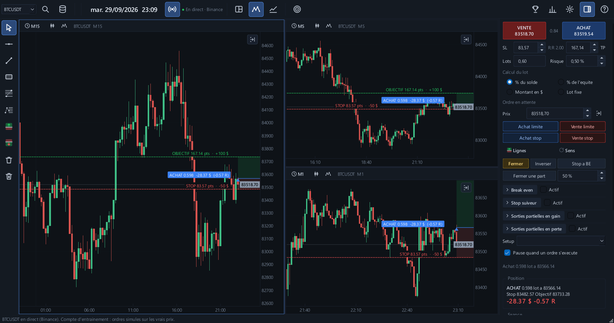

Ta plateforme de trading, du replay au direct.
Analyse sur plusieurs graphiques, entraîne-toi sur le passé bougie par bougie, suis les marchés en direct, gère tes positions avec un Trade Manager complet et découvre enfin ce qui te fait gagner… ou perdre. Pensée pour les traders CFD, futures et prop firm.

Tout ton trading au même endroit
Graphiques, exécution, gestion du risque, journal et statistiques : plus besoin de jongler entre cinq outils.
Graphiques multi-unités
1 à 4 graphiques synchronisés, des secondes au jour, Heikin Ashi, Renko, Range, graphiques en ticks.
Replay du marché
Rejoue n'importe quelle séance bougie par bougie, du temps réel jusqu'à x3000. Aucune bougie ne dévoile l'avenir.
Direct
Les vrais prix en continu, avec les mêmes outils qu'en replay. Brokers et prop firms en préparation.
Trade Manager
Lot calculé sur ton risque, break-even, stop suiveur, sorties partielles, ordres limite et stop, commission et swap.
Journal et calendrier
Chaque trade avec ses captures, son setup, ton émotion et tes erreurs. Le mois en un coup d'œil.
Coût de tes erreurs
Entrée trop tôt, stop déplacé, trade de revanche : FloorOne calcule ce que chaque erreur t'a coûté.
Analyse honnête
Espérance, verdict statistique, heures et jours gagnants, coach : un edge se prouve, il ne se ressent pas.
Challenge prop firm
Apex, Topstep, FTMO ou tes règles, appliquées à chaque mouvement de prix, et tes chances de réussir.
Plus de 110 symboles
Forex, indices, métaux, énergie, crypto : historique 1 minute téléchargé gratuitement, ou ton propre historique.

Le direct, avec les mêmes outils
Un clic sur Direct : les graphiques suivent les vrais prix en continu. Graphiques, indicateurs, tracés, Trade Manager, challenge et journal marchent exactement comme en replay.
- Les bougies se forment en temps réel, sur toutes les unités de temps
- Reconnexion automatique après une coupure
- Un clic pour revenir au replay, là où tu l'avais laissé
Aujourd'hui disponible : crypto en direct
avec un compte d'entraînement, ordres simulés sur les vrais prix.
Ton propre compte bientôt : CFD et futures, chez ton broker ou
ta prop firm.
Le journal qui te dit la vérité
Chaque trade est enregistré tout seul : captures à l'entrée et à la sortie, pire et meilleur moment, commission et swap. Tu ajoutes ton setup, ton émotion et tes erreurs en deux clics.

Ton mois en un coup d'œil
Le calendrier montre ce que chaque journée a rapporté, le nombre de trades, le taux de réussite et le total de la semaine. Les mauvaises séries sautent aux yeux.
- Résultats frais compris, en dollars et en R
- Filtres par séance, symbole, challenge
- Export Excel de tous tes trades

Chaque trade, décortiqué
La fiche d'un trade réunit ses deux captures, son résultat, son pire et son meilleur moment. Coche tes erreurs, note ce que tu aurais dû faire, et revois-le sur les graphiques en un clic.
- Setup, respect du plan (A / B / C), émotion
- Erreurs à cocher : entrée trop tôt, stop déplacé, sortie trop tôt… liste réglable
- « Revoir sur les graphiques » te replace au moment du trade


Un verdict qui ne te ment pas
Avec 20 trades, n'importe qui peut afficher un beau résultat. FloorOne calcule la fourchette de ton espérance et ne parle d'edge que s'il est statistiquement prouvé.
- Résultats par setup, heure, jour, sens, émotion
- Le coach : ce que tes trades disent de ta façon de trader, et ton erreur la plus chère
- Trades ambigus signalés : le replay n'est jamais plus gentil que le marché
Captures réalisées avec des trades de démonstration, pas des résultats réels.

Prop firm : les vraies règles, et tes vraies chances
Choisis Apex, Topstep, FTMO ou règle ton propre challenge : FloorOne applique chaque règle à chaque mouvement de prix, flottant compris. Puis le Monte-Carlo rejoue tes trades des milliers de fois.
- Drawdown statique, suiveur ou fin de journée, perte max du jour, consistance
- Le prix exact qui grillerait ton compte, tracé sur le graphique
- Ton pourcentage de réussite, et le risque par trade qui te donne le plus de chances
- Tu sais combien d'essais payants prévoir avant de dépenser 1 €

Tous les marchés, rangés et à portée de clic
Plus de 110 symboles classés par catégorie, avec une recherche qui comprend « or », « nasdaq » ou « bitcoin ». Double-clic : l'historique 1 minute se télécharge gratuitement.
- Forex majeures, croisées et exotiques, indices, métaux, énergie, crypto
- L'historique de ton courtier est lu automatiquement, un seul nom par instrument
- Futures et données tick en option

L'entraînement comme un sport
Répète 20 fois l'ouverture de New York en une soirée, en aveugle, à une date tirée au hasard. À la fin, une carte de résultat à partager avec un code défi : tes amis rejouent exactement le même moment.
Une seule plateforme
Graphiques, replay, direct, gestion des trades, journal et prop firm dans un seul logiciel.
| Plateforme classique | Outil de replay | FloorOne | |
|---|---|---|---|
| Graphiques et prix en direct | ✓ | — | ✓ |
| Trading de ton compte réel chez ton broker | ✓ | — | bientôt |
| Replay multi-graphique synchronisé | — | ✓ | ✓ |
| Trade Manager : lot au risque, break-even, sorties partielles | — | — | ✓ |
| Journal avec calendrier et coût des erreurs | — | — | ✓ |
| Règles de prop firm appliquées en direct | — | — | ✓ |
| Probabilité de réussir ton challenge (Monte-Carlo) | — | — | ✓ |
| Verdict statistique et coach | — | — | ✓ |
Tarifs simples
Commence par 7 jours gratuits, sans carte bancaire. Toutes les fonctions sont incluses dans chaque formule.
FLOOR30 au paiement,
-30 % à vie sur ton abonnement (20 €/mois au lieu de 29 €). Réservé aux 100 premiers.Mensuel
- Toutes les fonctions
- Mises à jour incluses
- 2 PC par licence
Annuel
- Toutes les fonctions
- Mises à jour incluses
- 2 PC par licence
À vie — lancement
- Toutes les fonctions
- Toutes les mises à jour de la version 2
- 2 PC par licence
Prix TTC. Paiement sécurisé par Lemon Squeezy, notre revendeur officiel, qui gère la TVA. Teste gratuitement 7 jours avant d'acheter. Conditions de vente
Questions fréquentes
Puis-je trader mon vrai compte avec FloorOne ?
Pas encore. Aujourd'hui, le mode Direct suit les vrais prix de la crypto avec un compte d'entraînement : tes ordres sont simulés, sans argent réel. La connexion à ton propre compte, en CFD puis en futures, chez ton broker ou ta prop firm, est en préparation.
D'où viennent les données de marché ?
La fenêtre Symboles télécharge gratuitement l'historique 1 minute de plus de 110 symboles (forex, indices, métaux, énergie, crypto). FloorOne lit aussi l'historique de ta plateforme de courtier et les fichiers CSV, et, en option, des données tick et des futures.
Sur quels ordinateurs ça marche ?
Windows 10 et 11 (64 bits). Pas de version Mac pour l'instant.
Les règles des prop firms sont-elles exactes ?
Les modèles Apex, Topstep et FTMO reprennent leurs règles principales, et tout est modifiable. Les prop firms changent régulièrement leurs conditions : vérifie-les toujours sur leur site avant un vrai challenge.
Est-ce que ça garantit que je vais gagner ou réussir mon challenge ?
Non. FloorOne est une plateforme d'analyse, d'entraînement et de gestion : elle te montre honnêtement ce que valent tes trades et tes chances. Les résultats simulés ou passés ne garantissent pas les résultats futurs.
Puis-je l'utiliser sur plusieurs ordinateurs ?
Oui, 2 PC par licence. Pour changer d'ordinateur, libère la licence depuis le menu ? → Licence.
Faut-il une connexion internet ?
Pour le mode Direct et les téléchargements, oui. Le replay, le journal et l'analyse marchent hors ligne : la licence se vérifie une fois par semaine, et tu peux travailler jusqu'à 14 jours sans internet.
Puis-je arrêter mon abonnement ?
Oui, à tout moment, en un clic depuis l'email de ton achat. Tu gardes l'accès jusqu'à la fin de la période déjà payée, sans autre prélèvement. Les 7 jours d'essai gratuit servent à tout tester avant d'acheter.
Windows affiche « Windows a protégé votre ordinateur »
C'est normal pour un logiciel récent. Clique sur « Informations complémentaires » puis « Exécuter quand même ».
Prêt à passer sur ta plateforme ?
7 jours gratuits, toutes les fonctions, sans carte bancaire.
Télécharger FloorOne